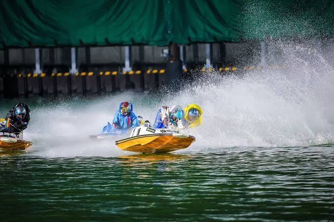

検証 12
SGの出走表を開くと、1号艇の欄に見慣れた名前がある。私はそこで、1号艇から流す舟券を、いつもより厚く買います。理由を聞かれたら「SGだから」と答えたと思う。10年のあいだ、誰にも聞かれませんでした。
見たままの1着率は、確かに高い。1号艇が1着になった割合は、一般戦で54.4%、G1で61.3%、SGで62.5%（5,754レース）。ここで数えるのをやめていれば、この記事は1段落で終わっていました。
ただ、SGの1号艇には強い選手が乗っています。強い選手は、一般戦で1号艇に乗っても勝つ。私が「SGだから」で上乗せしていた分は、選手の強さに払っていただけかもしれない。
2016年10月1日から2026年10月22日までの3,674日、55万4,003レースから、SG・G1と一般戦を取り出して数え直しました。舟券の数字は私の購入記録ではなく、毎回同じ額で買ったとして計算したものです。どの買い方も、100円を割って戻ってきます。

一般戦から、条件の近い1号艇を集めて見込みを作った。揃えたのは、レースの種類（予選・準優勝戦など）、1号艇の級別、1号艇の全国勝率、相手の中で一番勝率の高い選手と比べた勝率の差の4つです。たとえば「予選で、A1で勝率7.0から7.4、相手の一番手より0.5低い1号艇」どうしで比べます。
比べられたのは、SGの5,076レース（全体の88.2%）。そこでの1号艇は62.2%勝っていて、同じくらいの強さの一般戦の1号艇なら、68.8%勝つはずでした。差は−6.6ポイントで、100レースに7本ほど1着が少なく、偶然の範囲（±2.1ポイント）の外です。場まで揃えても、−7.8ポイント（2,083レース）だった。
同じ選手で比べると、足りなさはむしろ広がった。そのSGの後の一般戦で1号艇を5回以上走った283人を、一般戦で1号艇に乗ったときの自分と比べると、100レースに10.4本少ない（後から）。一般戦の成績をSGの前・後・全期間のどれで測っても、−9.8から−10.4ポイントでした。ただ、一流選手の一般戦の成績には弱い相手と走った分が混ざるので、この比べ方は差を大きく見せる向きに働きうる。
SGでは相手の5人も強いのだから、足りなさは相手のせいではないのか。相手の強さまで揃える比べ方を記事を書く途中で3つ足すと、1つは偶然の範囲の外、2つは偶然の範囲でした。ただ、範囲に入った2つは、相手が一般戦にもいる程度の、弱めの相手のSGしか比べられない数え方です。7本は「一般戦の感覚で見積もると、これだけ少ない」という数で、少ない理由がSGという格にあるのか、相手の厚さにあるのかまでは決められません。
減った1着の負け方として、最初に疑ったのは2コースの差し。SGで1号艇が2コースに差されて負けたのは、100レースで7.4本。見込みは4.5本で、+3.0ポイントでした。
この数字を見た時点で、記事の題を「SGの1号艇は差しで負けていた」に決め、図の色まで選んでいた。ところが、SGでは2コースにも強い選手がいる。2コースの選手の勝率まで揃えると（後から）、差しの増え方は+0.9ポイントになり、偶然の範囲に入りました。
3コースの勝率まで揃えると、差しは+2.7ポイントに戻り、偶然の範囲の外です。揃え方しだいで答えが変わるので、差しで負けていたとも、いなかったとも決められません。色まで選んだ図は、この記事には載っていません。
ここからは、1枠の艇が1コースから出たSGの5,032レースで数えます（後から）。このレースでの1号艇の1着率は62.3%で、一般戦の同じ条件の69.5%より7.1ポイント低い。
券種を変えると、損の大きさはどう変わるのか。調べた3つの券種で、結果が分かれました。1号艇の単勝は100円あたり87.0円で一般戦の同じ条件より4.9円少なく、複勝も91.0円で2.7円少なかった。1号艇から流す3連単（1-全-全）だけは78.2円で、一般戦の70.5円より7.6円多く戻りました。
1着の数がそのまま効く単勝と複勝は、一般戦より損が大きい。3連単は、勝ったときの平均配当がSGで2,509円、一般戦の同じ条件で2,031円と高く、1着の少なさを配当で取り返していました。この差も偶然の範囲の外です。
SGで1号艇が勝った3,086レースで、3連単が何番人気の組で決まったかを数えた。1番人気の組で決まったのは14.0%で、一般戦の同じ条件の20.5%より少ない。11番人気以下の組で決まったのは26.8%で、一般戦の18.0%より多かった。
2着に2コースが来た割合や、外のコースが来た数は、一般戦と違いが見えません。それでも人気の順で見ると、決まった組が人気どおりではなかった。実力の近い5艇が2着・3着を争えば、人気が割れるのは当然で、1号艇を含む組に票が集まりきっていなかった可能性もあります。
同じ人気の組でも、配当が高い。1番人気の組で決まり、同じ条件の一般戦が20レース以上あったSGの262レースでは、平均配当が924円で、一般戦の1番人気の組の556円より66%高かった。2番・3番人気の組は47%、4番から6番人気の組は20%、一般戦の同じ人気の組より高い。11番人気以下の組で決まったときは、逆に16%低かった。
相手5人の平均勝率が6.5から7.0のレースどうしで比べても、1番人気の組の配当の上乗せは、一般戦では15%（542レース）、SGでは70%（56レース）、G1では61%（907レース）でした。相手の強さを揃えても上乗せは消えませんでしたが、SGは56レースだけです。
SG・G1の節には、ふだん舟券を買わない人のお金も入ってくるのではないか。私はそれを疑っていますが、売上は今回数えていません。グランプリ（シリーズ戦を含む）でも1番人気の配当の上乗せは67%で、ほかのSGと同じくらいでした。
相手の強さまで揃えた3つの比べ方：1つ目、相手5人のA1の人数を揃えると−6.4ポイントで、偶然の範囲の外でした（3,285レース）。2つ目、相手5人の平均勝率と一番高い勝率まで揃えると、比べられたのは5,109レースのうち645レースだけで、−3.7ポイント、偶然の範囲に入りました。揃え方ではなく絞り込みですが、1号艇がレースで一番勝率の高い選手だったレースでは−8.8ポイントで外です（745レース）。
3つ目、6艇全員に一般戦の物差しを当て、6艇の見込みの合計が同じくらいの一般戦と比べると、全体では−2.7ポイント（1,024レース、偶然の範囲）。合計で分けると、一般戦並み（100%未満）が+3.6（540レース、範囲）、やや強い（100%から110%）が−8.9（325レース、外）、強い（110%から120%）が−13.8（118レース、外）、さらに強い（120%から140%）が−2.5（41レース、範囲）でした。合計が140%を超えるSGの546レースは、比べられる一般戦がありません。
進入で分けると、6艇が枠なりに並んだSGでは−6.8ポイント（3,991レース）、枠なりでなくても1枠がインに入ったSGでは−13.5ポイント（811レース）でした。この2つの違いの揺れは数えていません。
レースの種類で割ると、予選などは−7.7ポイント（4,471レース）、ドリーム戦・特選などは+2.9（348レース）、準優勝戦は−2.8（184レース）、優勝戦は+1.0（73レース）でした。予選以外は数が少なく、どれも偶然の範囲です。物差しを3つ目に替えて、6日間のSGで日程を分けると、予選の日（556レース）は4.4本、準優勝戦と優勝戦の日（445レース）は1.6本少なく、どちらも偶然の範囲でした。
開催の名前で割ると、8つのSGのうち、グランプリ（−0.3ポイント、673レース）・グランドチャンピオン・オーシャンカップ・メモリアルの4つは偶然の範囲でした。
10年を前半（2016年から2021年）と後半（2022年から2026年）に割ると、SGの揃えた差は−8.4ポイントから−4.7ポイントに縮んで見える。後半の数字を見て、私は少し期待しました。年まで揃え直すと、前半−8.8ポイント、後半−8.0ポイントで、2つの違いの揺れは数えていません。
まくりとまくり差しは、2コースの勝率まで揃えた比べ方では+1.9と+2.6ポイントで偶然の範囲の外でしたが、最初の比べ方ではどちらも偶然の範囲でした。スタートは、1号艇が2コースより0.05秒以上遅れたレースが、SGで100レースに8.6本と見込みの6.3本より多く、6艇で一番早い艇と比べると30.5%で見込みの30.3%と変わりませんでした。
締切前の単勝オッズは2026年の分しかなく、SGの1号艇はオッズから見込める勝率より11.1ポイント、一般戦は8.2ポイント多く勝っていました。359レースでは、この2つは偶然の範囲で見分けられません。
売上（投票の数）は数えていない。人気が割れる理由を確かめるには、レースごとの売上と、締切前の3連単オッズの並びが要ります。2連単や2連複の1号艇から買った場合も、まだ数えていません。
節の得点率、賞金の順位、地元の選手かどうかは、今回の集計に入っていない。減った1着が、どのコースのどの決まり手に移ったのか、2着に残ったのかも、まだ分けていません。
次のSGでも、出走表の1号艇の欄には、見慣れた名前が並んでいる。選手の強さを揃えても、SGの1号艇は100レースに7本ほど足りなかった。勝てば1番人気でも配当がつくので、流した3連単は一般戦より損が小さかったけれど、それでも100円が78円で戻る買い方です。
次のSGでは、1号艇から流す額を一般戦と同じにします。
集計期間 2016/10/1 から 2026/10/22（3,674日・554,003レース）
出典：公式サイトの競走成績・番組表・月間スケジュール（開催のグレード）。この期間の数字は固定で、更新されません。